Here is ♪ Ralph's performance ♪ of it on his album "Anthem"
The piece is in primarily in D minor. The bass voice is mostly pedal-ing on D2/D3 octave notes.

In the intro section [A], I like interleaving this bass chord in between the two note chords ( dyads )

It's really interesting that in the piece, the melody voice for
large parts of the song is ascending or descending progressions
of dyads. Using these simple (to play) dyads, It keeps the
sound open and emphasizes the interesting harmonies ralph is
employing in the progressions by just stripping them down to their
fundamental essence. The bass side continues this with a just using
mostly continuous